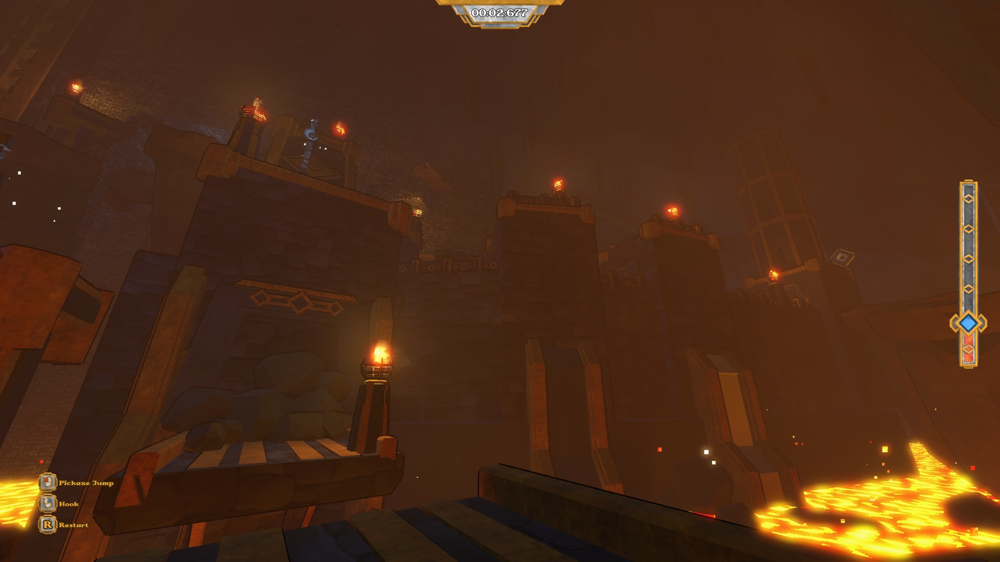
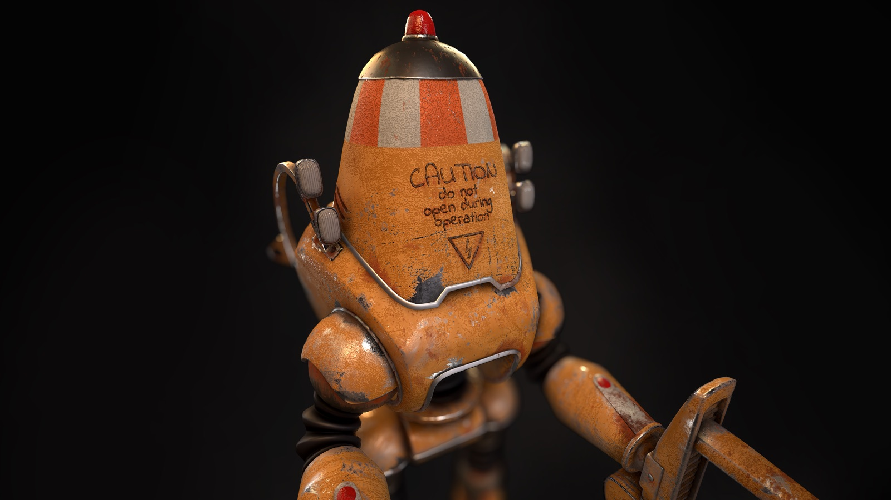

Engineering
Pipedrive — Junior Software Engineer
Subscription billing — a domain where one subscription can carry discounts, scheduled changes and a legacy plan at once, and every combination has to stay correct across the product, the invoice and the data warehouse.
Most of my work sat in pricing and packaging: the experiment platform below, a company-wide change to what customers get for their money, and the seasonal campaigns that run on top of all of it. I usually owned a change the whole way — database migration, service, endpoint, page.
I reviewed about as much as I wrote: 218 of other engineers' pull requests, a lot of them from people far more senior than me. The two catches I'd stand behind were both in services I didn't own.
I also built small tools for the work I did repeatedly — two Claude Code skills for my team, and a set of scripts for the bulk billing operations that every campaign ends with.
Pipedrive — Software Engineering Intern
Six weeks rebuilding an internal tool from Vue into React and moving it inside the company's admin platform as a micro-frontend. We started from an empty repository.
None of us had used the front-end stack before — the in-house bundler, the design system, the styling library — and we were reading from an API another team owned, so one of the things we wanted to build simply wasn't possible for the whole project. I set the repository up on the plugin platform, built the table and detail views, wrote the typed data layer and added the component test suite.
What I took from it had less to do with React than with working inside someone else's constraints and shipping anyway. The tool is still running two years later under a different team, and the components I wrote are still in it. I joined permanently in January.
Selected work
-
A platform for pricing experiments
2026 · led a five-person cross-functional teamThe company priced in two market clusters — one set of prices for each, whatever the local conditions. To find out whether that was too blunt, we had to run real price tests on live trial customers.
The hard part wasn't showing different prices. It was deciding who sees them and keeping that decision correct everywhere at once. The data you need to exclude sales-assigned and partner-referred accounts arrives shortly after sign-up, which is exactly when the old design decided — so those accounts landed in the wrong groups. And a salesperson quoting from the back office has to see the price the customer will actually get.
I shipped an interim fix, then replaced it with an event-driven design: a consumer on a company-wide event topic re-evaluates eligibility whenever that data changes, and the whole thing locks the moment a customer commits to a price. I wrote the architecture decision record behind it, which passed the company's review. A later decision record names mine as the document it builds on, and I reviewed that one.
Both experiments ran to a decision. The winning variant became the company's new pricing baseline, and the next rounds ran on the same platform after I'd moved off the project.
-
An endpoint that outgrew what I built it for
2026 · Node · internal APIWe needed to remove an add-on from thousands of subscriptions. The platform had one endpoint for changing a subscription and it was built for a person clicking in the product: the caller composes the entire subscription it wants. Driving that from a migration means recomposing a whole subscription correctly, thousands of times, and any slip quietly removes something the customer is paying for.
So I built a single-purpose one instead. "Remove this add-on" turns out to mean four different things — remove it now, schedule it for the end of the term, do nothing because they never had it, or refuse because a reseller manages them — and a batch job has to be able to tell "nothing to do" apart from "this failed". It returns a fixed set of outcomes rather than a message, and every dependency it calls fails with its own log line.
It did the migration I built it for. Two months later another engineer extended it for a different product, and a month after that a service from a different part of the company started calling it. It's now the normal way to remove an add-on.
-
Making a paid add-on free
2026 · billing side of a cross-team launchAccess to the add-on was derived from the wrong thing — a flag attached to the package a company had bought. Making it free meant re-deriving access from the plan instead, for every existing customer, without anyone losing access for a single request.
Three things worked against it. A reconciliation service continuously repairs exactly the kind of drift this migration creates, so every change had to ship as a matched pair with a change there. Plan upgrades recompute entitlements from the plan's configuration rather than the company's current state, so a deliberately excluded customer would silently get access back just by changing plan. And customers mid-trial mustn't convert to paying for something about to be free.
I sorted the affected companies into five groups before there was a ticket for any of it, wrote the removal runbook as a decision tree, and worked the failures company by company on launch day.
-
Seasonal revenue campaigns
2025–2026 · seven shippedA campaign looks like a banner and a discount. Underneath it's a matrix: several offers, several customer segments and several plan tiers, where each combination needs its own promotion, feature flag and eligibility rule — all correct on the morning it goes live, and all removable the day it ends.
I did seven over two years. On the first I owned the back end while another engineer built the front; on the last I wrote both halves. In between I reviewed his.
The part I'd point at is the teardown. Every campaign leaves discounts sitting on accounts that never converted, and someone has to take them off. I wrote the scripts for that — they resolve each company's region, check what it actually holds, and skip with a stated reason rather than guessing.
Frontend
TypeScript · React · Redux Toolkit · React Query · micro-frontends
Backend
Node.js · Fastify · REST APIs · MySQL · Apache Kafka · Docker
Graphics & Games
Godot 4 · GDShader / GLSL · C++ / raylib · Blender · Maya · TrenchBroom
Practice
Feature flags · gradual rollout · production support · Jest, Cypress · CI/CD · AI-assisted development
Projects
Dwarf Escape
A first-person platformer set in a dwarven mine — a pickaxe jump, a grappling hook, and a timer running in the corner. I made the environment art and the materials: the cave and architecture geometry, the tileable rock and brick textures, and the lava that lights most of the level.
We showcased it twice at game-dev expo events and ran tournaments on it.


Wolf-Hunter
A 2D action game written directly on raylib, with no engine underneath. Everything is hand-rolled: tile collision, enemy state machines, two weapon systems with combo timers and projectiles, a dodge roll with invulnerability frames, and binary save/load. The art and the Tiled maps are mine too.
It is the project where I found out what an engine actually does for you, by not having one.
3D art
Four years of 3D alongside everything else. Hard-surface modelling and sculpting, UV unwrapping, baking, and texturing — both hand-painted and realistic PBR. These are personal pieces rather than game assets.



Small Projects
-
Bubble Wizard
January 2025 · Global Game Jam Tallinn · 3rd placeA first-person roguelike shooter. Kill enemies, pick up the experience they drop, and every level-up hands you an upgrade. Made over a weekend in Godot with a five-person team.
-
Spectre
March 2025 · TalTech Spring Game Jam · GodotA short first-person puzzle game. You wake up sharing your body with a ghost, and it will not leave until you find the family relics scattered through its old manor. Made over a weekend with a five-person team.